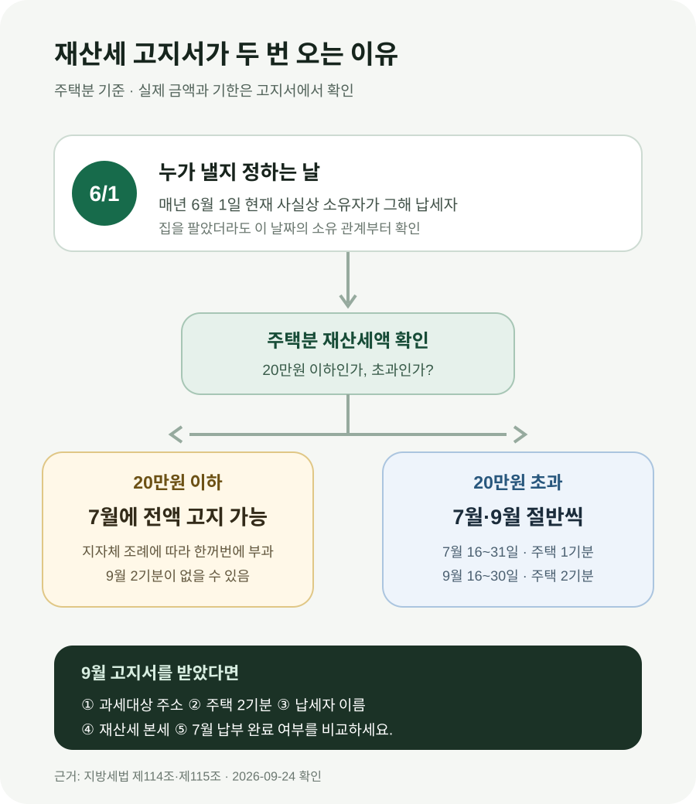

7월에 재산세 냈는데 9월에 또 나온 이유는?
7월과 9월 고지서가 모두 같은 주택의 ‘주택분 재산세’라면, 대개 같은 세금을 중복으로 부과한 것이 아니라 1년치 세액을 절반씩 나눈 것입니다. 주택분 재산세는 원칙적으로 7월과 9월에 각각 절반씩 냅니다. 다만 해당 주택의 재산세액이 20만원 이하라면 지방자치단체 조례에 따라 7월에 한꺼번에 부과할 수 있습니다. 9월 고지서를 받았다면 먼저 과세대상 주소, ‘주택 2기분’ 표시, 납세자 이름, 7월 고지서 금액을 차례로 비교하세요.
먼저 고지서의 ‘주택 2기분’을 보세요
9월 우편함이나 전자고지에서 재산세를 다시 발견하면 가장 먼저 드는 생각은 “7월에 이미 냈는데 또 내라는 건가?”입니다. 이때 총액부터 계산하기보다 고지서의 세목, 과세대상, 과세구분을 먼저 보세요. 같은 아파트 주소의 ‘재산세(주택) 2기분’이라면 7월 1기분에 이어 나온 두 번째 고지서일 가능성이 큽니다.
지방세법 제115조는 주택분 재산세의 납기를 7월 16일부터 7월 31일까지와 9월 16일부터 9월 30일까지로 나눕니다. 각 기간에 내는 금액은 산출한 주택분 재산세의 2분의 1입니다. 따라서 7월분을 정상 납부해도 9월분이 남아 있습니다.
예를 들어 한 주택에 대한 연간 주택분 재산세 본세가 36만원이라면 기본 구조는 7월 18만원, 9월 18만원입니다. 이것은 이해를 돕기 위해 본세만 단순화한 예입니다. 실제 고지서의 납부 합계에는 지방교육세 등 함께 표시되는 금액과 원 단위 처리 등이 있어 두 장의 최종 합계가 계산기처럼 완전히 같지 않을 수 있습니다.
연세액이 20만원 이하라면 7월 한 번으로 끝날 수도 있습니다
“우리 부모님 집은 7월에만 냈는데 나는 왜 9월에도 내지?”라는 의문도 자주 생깁니다. 주택 가격만의 차이라고 단정하지 말고 먼저 해당 주택의 주택분 재산세액이 20만원을 넘는지를 확인하세요.
지방세법은 주택분 재산세액이 20만원 이하이면 조례로 정하는 바에 따라 7월에 전액을 부과할 수 있도록 합니다. 그래서 7월 고지서에 ‘연납’ 또는 일괄 부과 취지로 전액이 들어갔다면 9월에 같은 주택의 2기분이 오지 않을 수 있습니다. 반대로 20만원을 넘으면 보통 7월과 9월로 나뉩니다. 여기서 20만원은 집값이나 7월에 실제 이체한 최종 합계가 아니라 법에서 말하는 그 주택의 재산세액 기준입니다.
| 7월 고지 상황 | 9월에 예상할 일 | 확인할 표시 |
|---|---|---|
| 주택분 연세액을 절반만 부과 | 나머지 절반을 2기분으로 고지 | 1기분·2기분, 같은 과세대상 |
| 재산세액 20만원 이하로 7월 일괄 부과 | 같은 주택의 2기분이 없을 수 있음 | 7월 고지서의 일괄 부과 내용 |
| 주택 외 건축물분을 7월에 납부 | 9월 토지분 등이 별도로 올 수 있음 | 주택·건축물·토지 구분 |
| 공동명의자 한 명의 고지서만 확인 | 다른 공유자에게 별도 고지 가능 | 납세자 이름과 지분 |
따라서 “7월에 얼마 냈다”는 기억만으로 9월 고지의 오류를 판단하기 어렵습니다. 7월분과 9월분이 같은 세목인지, 같은 주소인지, 같은 사람 몫인지를 맞춰 봐야 합니다.

두 장을 펼쳐 놓고 이 다섯 칸부터 맞춰 보세요
9월분이 정상적인 두 번째 고지인지 확인하는 데는 복잡한 세율 계산보다 두 장을 나란히 놓는 편이 빠릅니다. 종이 고지서를 잃어버렸다면 위택스에서 부과 내역과 납부 결과를 확인할 수 있습니다.
- 세목과 기분: 두 장 모두 재산세(주택)인지, 7월은 1기분이고 9월은 2기분인지 봅니다.
- 과세대상: 도로명주소와 동·호수까지 같은 집인지 확인합니다. 여러 채를 보유했다면 다른 주택의 고지서일 수 있습니다.
- 납세자: 본인 고지서인지, 배우자나 공동소유자의 고지서인지 이름을 봅니다.
- 세액 항목: 재산세 본세와 지방교육세 등 부가 항목을 분리해 비교합니다. ‘납부할 세액’ 한 줄만 보면 차이의 이유를 놓치기 쉽습니다.
- 납부 상태: 7월에 실제로 정상 납부됐는지 위택스나 계좌 출금 내역으로 확인합니다. 자동이체를 신청했다는 사실과 납부 완료는 다릅니다.
두 고지서의 과세대상과 납세자가 같은데 둘 다 1기분으로 표시되거나, 7월에 전액 일괄 부과됐는데 같은 주택의 2기분이 또 나왔다면 관할 시·군·구 세무부서에 문의할 이유가 있습니다. 문의할 때는 고지서 번호, 과세대상 주소, 7월 납부일과 영수증을 준비하면 확인이 빠릅니다.
올해 집을 샀거나 팔았다면 잔금일보다 6월 1일을 먼저 봅니다
9월 고지서를 받은 사람이 현재 집주인과 다를 수도 있습니다. 재산세는 7월이나 9월에 집을 가진 사람이 아니라 매년 6월 1일 현재 사실상 소유자에게 부과하기 때문입니다. 근거는 지방세법 제114조입니다.
가령 6월 2일에 집을 넘겼다면 6월 1일 소유자였던 매도인이 그해 재산세 납세자가 됩니다. 반대로 6월 1일에 소유권이 매수인에게 넘어간 거래라면 매수인 쪽에 부과될 수 있습니다. 행정안전부도 재산세 납부일이 아니라 6월 1일을 기준으로 소유자를 판단한다고 안내합니다.
매매계약에서 재산세를 보유 일수에 따라 나눠 정산하기로 합의했더라도, 그것은 매도인과 매수인 사이의 정산 문제입니다. 지방자치단체가 고지하는 법정 납세자가 계약 문구만으로 자동 변경되는 것은 아닙니다. 6월 전후 거래라면 잔금일, 소유권이전등기 접수일, 계약서의 조세 정산 특약을 함께 확인하세요.
9월에 이미 집을 판 매도인에게 고지서가 왔다고 해서 무조건 잘못된 것은 아닙니다. 먼저 본인이 6월 1일 소유자였는지 확인하고, 매매 때 재산세를 정산했다면 잔금 정산서에서 이미 주고받은 금액이 있는지 살펴야 같은 돈을 두 번 부담하는 실수를 피할 수 있습니다.
공동명의라면 부부에게 각각 고지될 수 있습니다
부부 공동명의 아파트인데 배우자와 나에게 모두 고지서가 왔다면, 같은 집이라도 각 공유자의 지분에 따라 각각 부과된 것일 수 있습니다. 한 사람이 받은 고지서만 보고 “우리 집 재산세는 이 금액”이라고 생각했다가 다른 한 장을 중복으로 오해하기 쉽습니다.
이 경우에는 주소뿐 아니라 납세자와 과세표준 또는 지분 관련 표시를 확인하세요. 두 사람이 각각 자기 몫을 고지받았다면 한 장을 대신 낸다고 다른 사람의 고지까지 자동 소멸하는 것이 아닙니다. 반대로 전자고지를 함께 쓰거나 가족이 우편물을 대신 받아 두 장이 같은 납세자의 중복 출력처럼 보일 수도 있으니 고지서 번호까지 비교하는 편이 안전합니다.
예를 들어 부부가 각 50% 지분을 가진 집이라면 각자 지분에 해당하는 재산세가 고지될 수 있고, 각자의 주택분 세액이 다시 7월과 9월로 나뉠 수 있습니다. 다만 실제 과세표준과 세액 계산은 주택 공시가격, 지분, 감면 적용 등 개별 자료에 따라 달라지므로 단순히 집 전체 고지액을 반으로 나눈 값과 정확히 일치한다고 단정해서는 안 됩니다.
7월과 9월 납부액이 조금 다르다고 바로 오류는 아닙니다
법의 기본 구조는 연간 주택분 재산세의 절반씩이지만, 실제 고지서의 최종 납부액을 비교하면 몇 원 또는 항목별 차이가 보일 수 있습니다. 세액의 원 단위 처리와 함께 고지되는 세목을 확인하지 않고 “절반이 아니니 잘못됐다”고 결론 내리지는 마세요. 비교의 출발점은 최종 합계가 아니라 두 장에 적힌 재산세 본세와 과세대상입니다.
차이가 크다면 다음을 확인합니다. 7월 이후 세액이 정정됐는지, 감면이나 공시가격 관련 정정이 반영됐는지, 한쪽 고지서에 체납분이나 다른 물건이 섞였는지 살펴보세요. 이유를 고지서에서 찾지 못하면 관할 지자체 세무부서에 산출 근거를 요청할 수 있습니다. 집값에 세율만 곱해 스스로 계산한 값과 고지서가 다르다는 이유만으로 오류라고 단정하기도 어렵습니다. 재산세는 과세표준, 세율, 세부담 상한과 감면 등 여러 항목을 거칩니다.
지금 해야 할 일은 ‘한 번 더 낼까’가 아니라 고지 내용을 확인하는 것입니다
2026년 9월 고지분의 구체적인 납부기한은 본인이 받은 고지서와 위택스에서 확인하세요. 법정 납기는 9월 16일부터 9월 30일까지입니다. 납부기한이 지나면 납부지연에 따른 금액이 더해질 수 있으므로 중복 여부를 문의하는 동안에도 기한을 방치하지 않는 것이 좋습니다.
위택스에서는 고지 내역과 전자납부번호를 확인하고 계좌이체나 카드 등 제공되는 방법으로 납부할 수 있습니다. 고지 내용 자체가 잘못됐다고 생각되면 단순히 미납으로 두기보다 관할 지자체에 먼저 산출 근거와 정정 절차를 문의하세요. 큰 금액을 한 번에 내기 어려운 경우에는 재산세 분할납부 대상과 신청기한이 따로 있으므로 관할 세무부서에 본인 고지액이 요건을 충족하는지 확인해야 합니다.
자주 묻는 질문
7월에 자동이체했는데 9월에도 자동으로 빠져나가나요?
자동이체 신청 범위와 적용 시점은 신청 내역을 확인해야 합니다. 7월 출금 성공만으로 9월분도 반드시 처리된다고 단정하지 말고, 위택스나 금융기관에서 9월분 자동납부 상태와 출금일을 확인하세요.
9월 고지서 금액이 7월보다 커졌는데 집값이 오른 건가요?
두 장의 최종 합계 차이만으로 공시가격 상승을 판단할 수 없습니다. 같은 주택·같은 납세자의 1기분과 2기분인지, 재산세 본세가 어떻게 적혀 있는지, 다른 세목이나 정정액이 포함됐는지를 먼저 확인하세요.
7월 이후 집을 팔았는데 내가 9월분도 내야 하나요?
6월 1일에 소유자였다면 그해 재산세의 법정 납세자가 될 수 있습니다. 매매계약에서 별도로 일할 정산하기로 했다면 잔금 정산서와 특약에 따라 상대방과 정산할 문제는 남을 수 있지만, 지자체 고지의 납세자와는 구분해야 합니다.
공동명의 배우자 고지서를 내가 한꺼번에 낼 수 있나요?
납부 자체의 방법과 별개로 각 고지서는 납세자별 채무입니다. 각 고지서의 전자납부번호와 납부 상태를 따로 확인해 누락이나 이중 납부가 생기지 않게 하세요.
7월에 20만원을 냈는데 왜 9월에도 나왔나요?
법에서 말하는 20만원 기준은 단순히 7월 고지서의 최종 납부 합계가 아닙니다. 해당 주택의 재산세액과 지자체 조례에 따른 일괄 부과 여부를 봐야 합니다. 7월 고지서의 재산세 본세와 1기분 표시를 확인하고 관할 세무부서에 문의하세요.
공식 자료
- 국가법령정보센터 — 지방세법 제114조(과세기준일)
- 국가법령정보센터 — 지방세법 제115조(납기)
- 행정안전부 — 9월 주택 2기분·토지 재산세 납부 안내
- 대한민국 정책브리핑 — 재산세 과세기준일은 6월 1일
- 위택스 — 지방세 고지·납부 내역 확인
정보 기준일: 2026-09-24. 이 글은 주택분 재산세의 일반적인 고지 구조를 설명합니다. 토지·건축물 등 다른 과세대상, 감면, 정정, 공동명의와 매매 정산은 개별 고지 내용에 따라 달라집니다. 실제 세액과 납부기한은 고지서·위택스 및 관할 시·군·구 세무부서에서 확인하세요.
고지서를 확인한 뒤 함께 보세요
- 부동산 종합 계산기주택 취득·보유·양도 단계의 비용 확인
- 취득세 계산기집을 살 때 드는 세금과 비용 확인